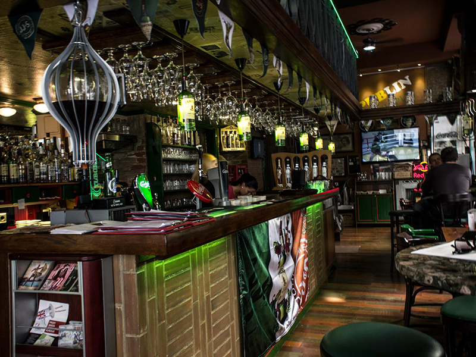
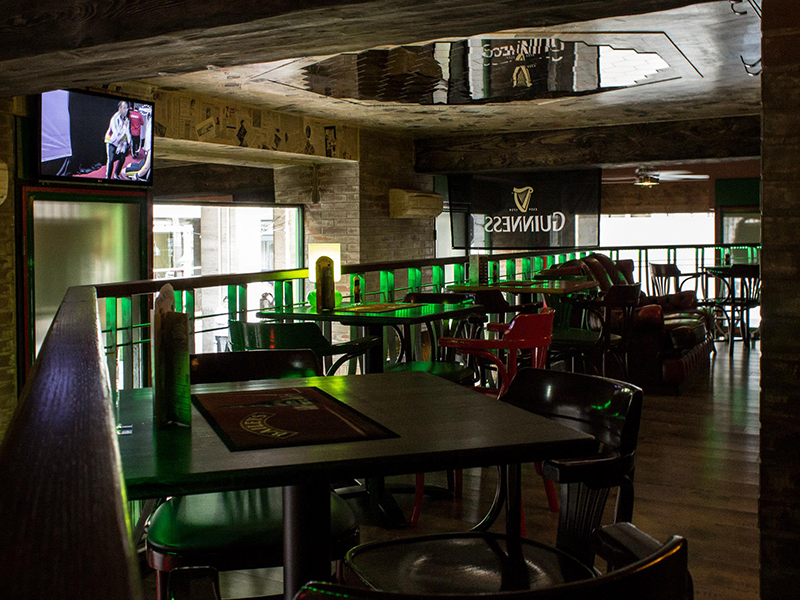
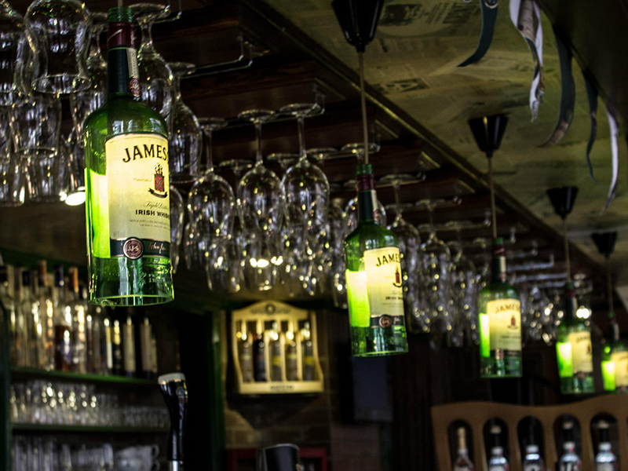

A Publin egy ír tematikájú kocsma, melynek célja, hogy a vendégek betekintést nyerjenek az igazi ír kocsma kultuszba, át tudjanak szellemülni pár órára a környezet által teremtett nyugodt hangulatba. Az írek nagyon közvetlenek, barátságosak, a kocsmákban általában még élő zene is kíséri az estéket. A Publin ugyanezzel a mentalitással biztosítja a kikapcsolódást a vendégeknek.


